Patient's Tool Kit

The Workplace
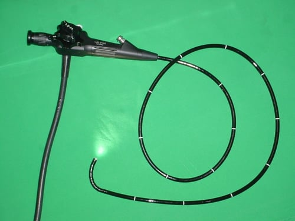
Doctor's Toolkit
Gastrointestinal health, especially colon health, has been in the news recently due to a rise in colon cancer, particularly among young people. The reasons underlying this rise are not fully understood, but likely involve changes in diet, activity levels, and obesity levels. Fortunately, most colon cancers are slow growing, so if they or their precursors are detected early enough, the cancers may be prevented or cured. The gold standard for detecting colon cancer, and other GI tract lesions, is “endoscopy.” This approach involves completely evacuating the pertinent portion of the gastrointestinal (GI) tract and then inserting an endoscope through the mouth or rectum to image, examine, and in some cases treat the GI tract’s lining. The end of the endoscope includes a light, an imaging system, and, in some cases, a snipping tool. This study describes two GI-tract-specific forms of endoscopy, namely, esophagogastroduodenoscopy (EGD) and colonoscopy, used to examine the upper and lower GI tracts, respectively. These are completely independent procedures, although in this study they were both performed during the same hospital visit, beginning with the EGD.
Esophagogastroduodenoscopy is an upper GI endoscopy procedure used to diagnose and treat
abnormalities in the esophagus, stomach, and duodenum (the start of the small intestine). The
procedure may be performed prophylactically, for example, to look for damage caused by
chronic acid reflux. Preparation typically involves refraining from food and water for about 8
hours before the procedure. Patients are typically sedated and positioned on their side. The
endoscope is inserted into the mouth, down the esophagus, through the stomach, and into the
duodenum. The examination is standardly made as the endoscope is withdrawn.
The endoscopist in this study generated a series of images showing the stomach, duodenum,
duodenal bulb, and esophagus, among others. The stomach was imaged first. The image is a
retroflexed view, in which the endoscope was passed through the stomach and the camera
turned backward to take the image, which shows both the stomach and an upstream portion of
the endoscope. The endoscope was next passed into the duodenum, farther down the GI tract,
and then withdrawn while care was taken to observe mucosal detail.
The EGD results in this study were good. In particular, the endoscopist stated that all observed
structures appeared normal and that there was no evidence of any damage, including acid-
reflux damage.
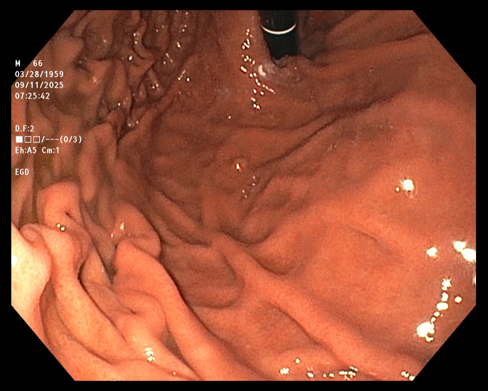
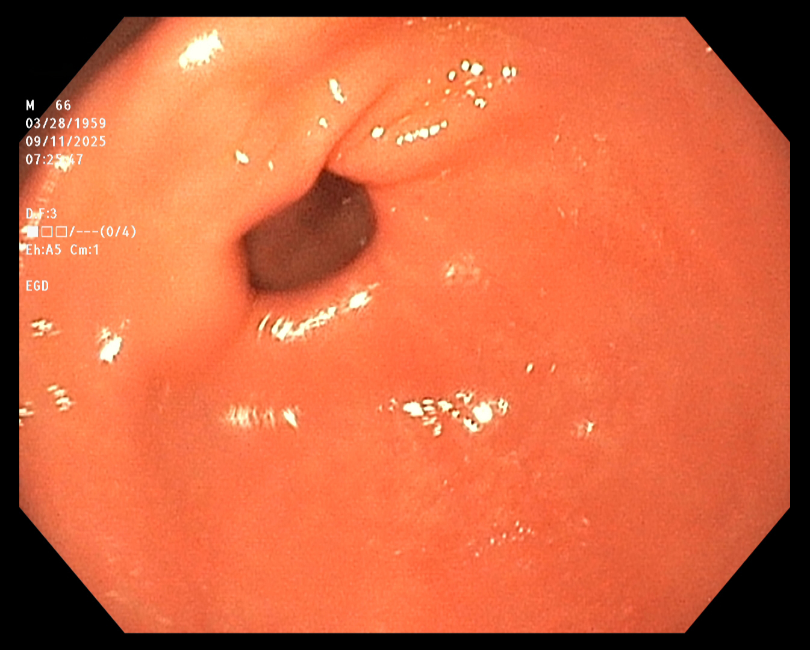
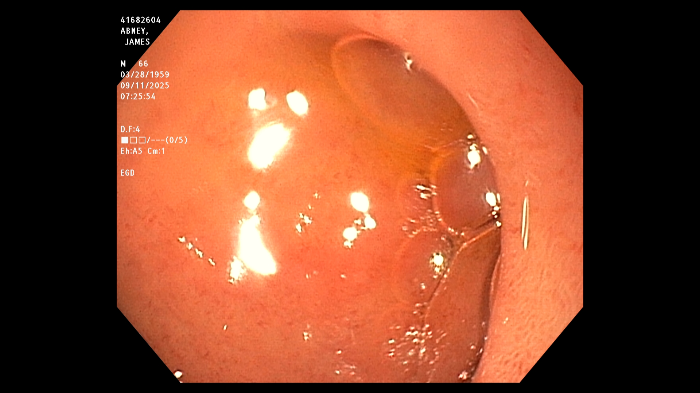
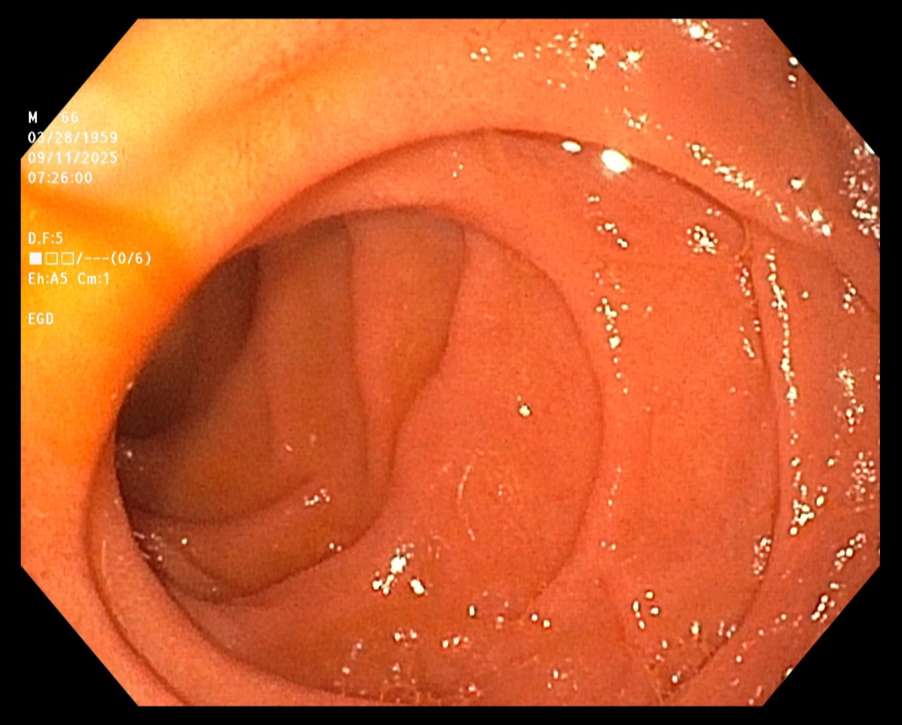
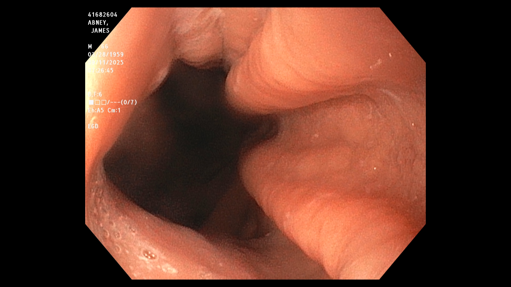
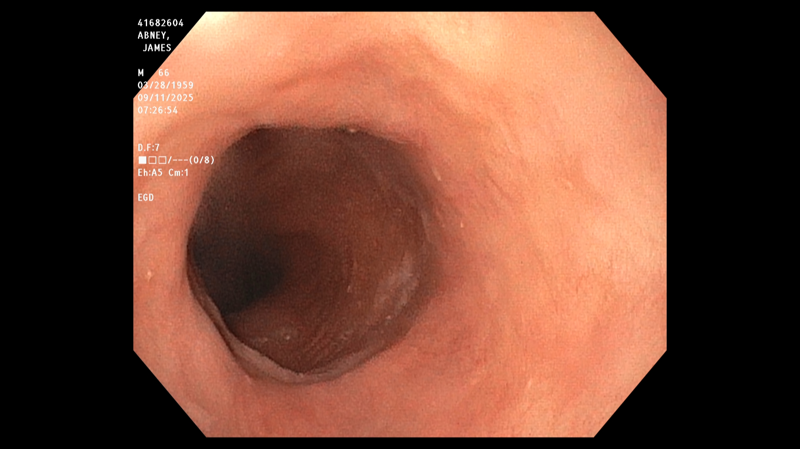
A colonoscopy is a lower GI endoscopy procedure used to diagnose and treat abnormalities in the rectum and colon. The procedure is commonly performed prophylactically, ahead of known issues, to assess colon health and to identify and remove precancerous growths, such as polyps. Preparation typically requires several days, starting by removing fiber and nuts from the diet, transitioning to eating only clear foods, such as lemon-lime Jello, and finishing by drinking a gallon of an osmotic laxative. The colonoscopy itself may seem anti-climactic. Patients are typically sedated and positioned on their side, like with EGD. The endoscope is inserted into the rectum and advanced through the colon to the cecum. Examination is performed as the endoscope is withdrawn.
Patient's Tool Kit
The Workplace

Doctor's Toolkit
The endoscopist in this study generated a series of images showing the cecum and several sites
of concern (e.g., polyps). The cecum is the beginning of the colon, so reaching it ensures that
the entire colon will be examined. The endoscope was slowly withdrawn, while the endoscopist
assayed mucosal detail and identified and removed several polyps for later examination. The
first and last images were taken about twenty minutes apart.
The colonoscopy results were relatively unconcerning. However, because polyps were
detected, the patient was advised to repeat the procedure in five years.
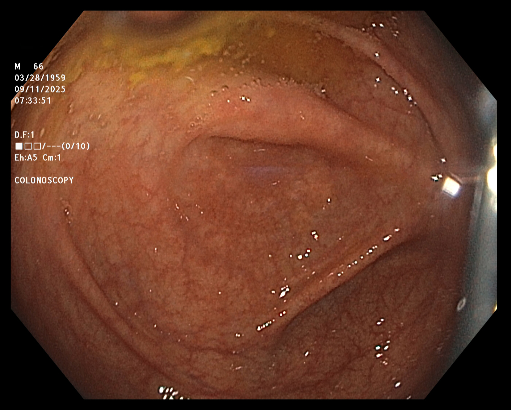
Cecum
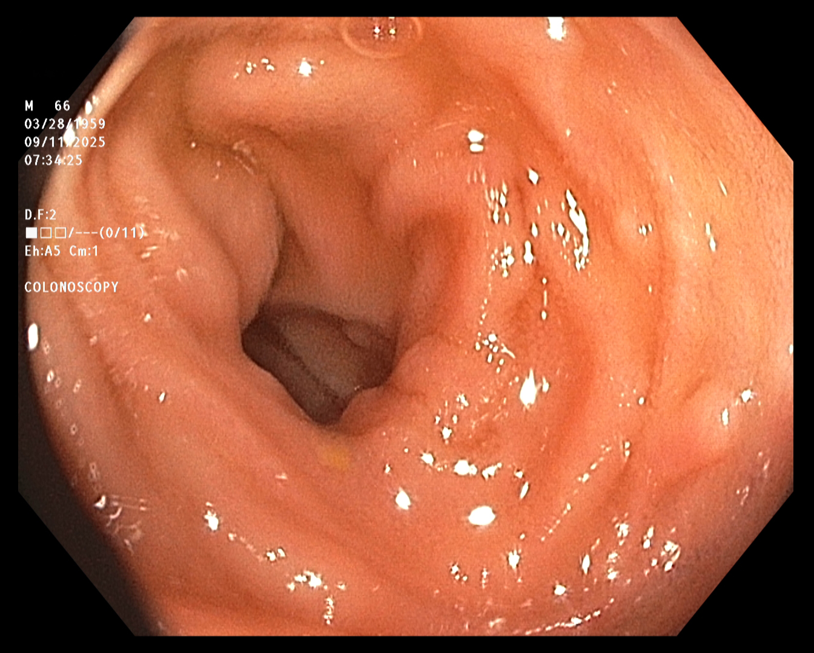
Terminal Ileum
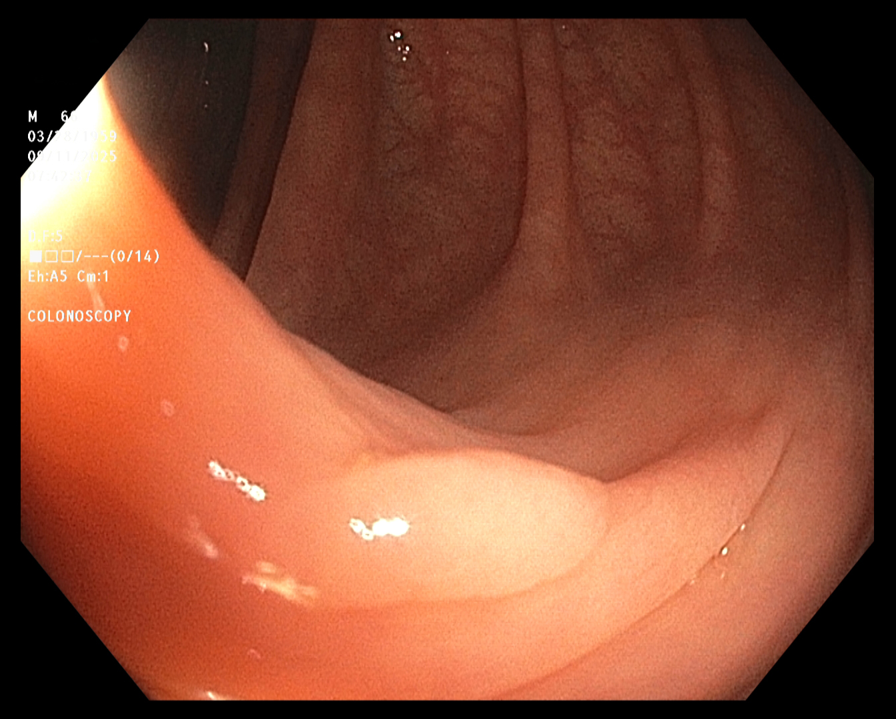
Polyp 1
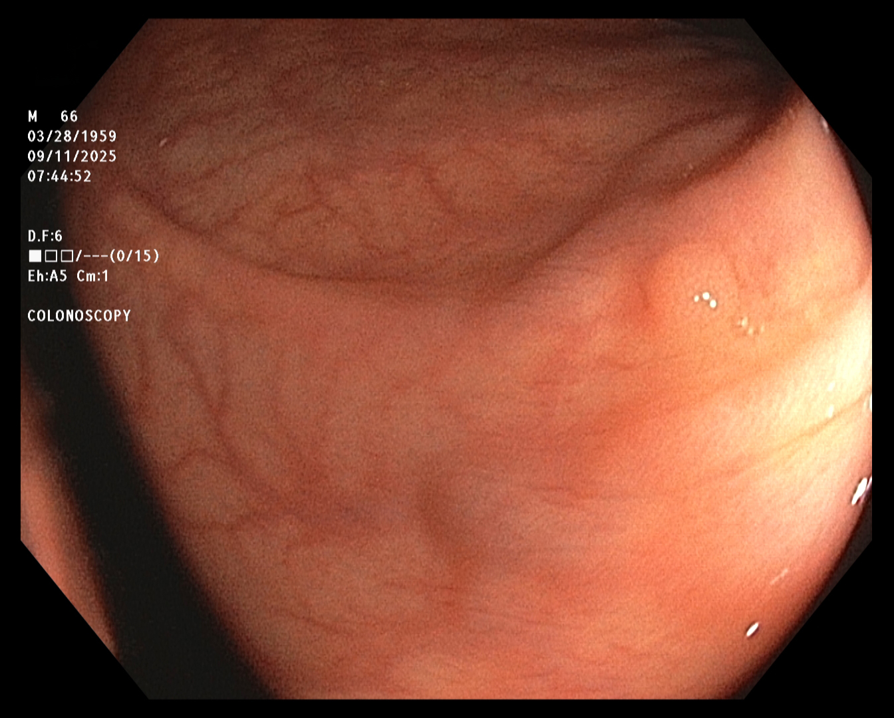
Polyp 2
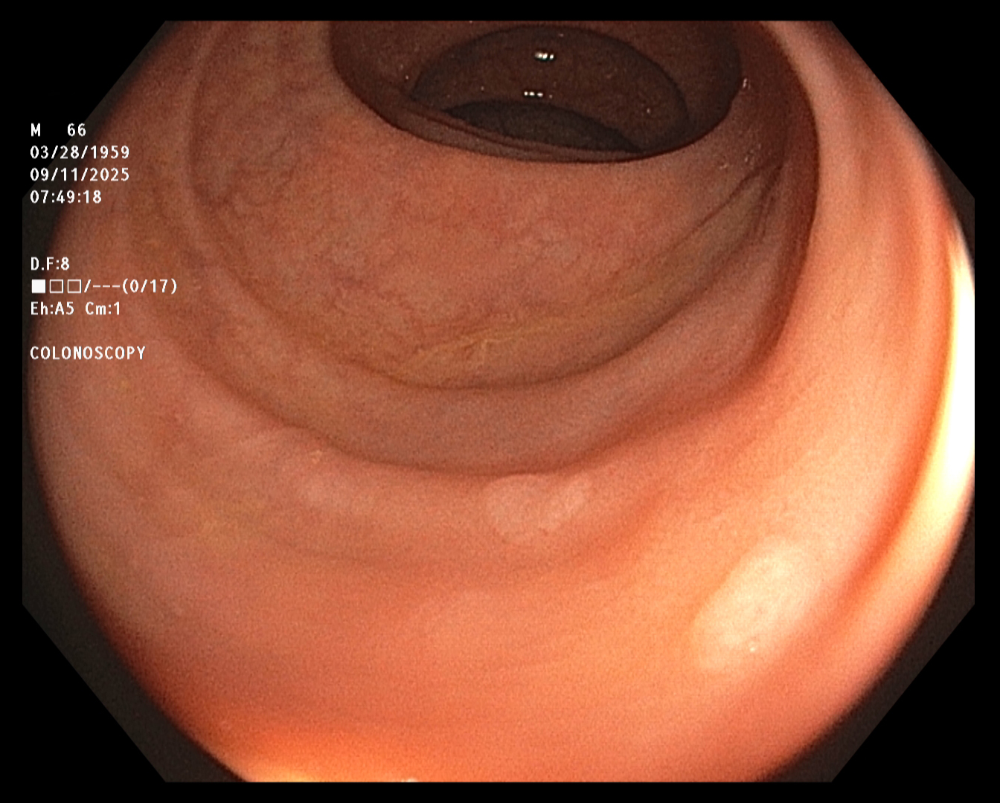
Polyps 3 and 4
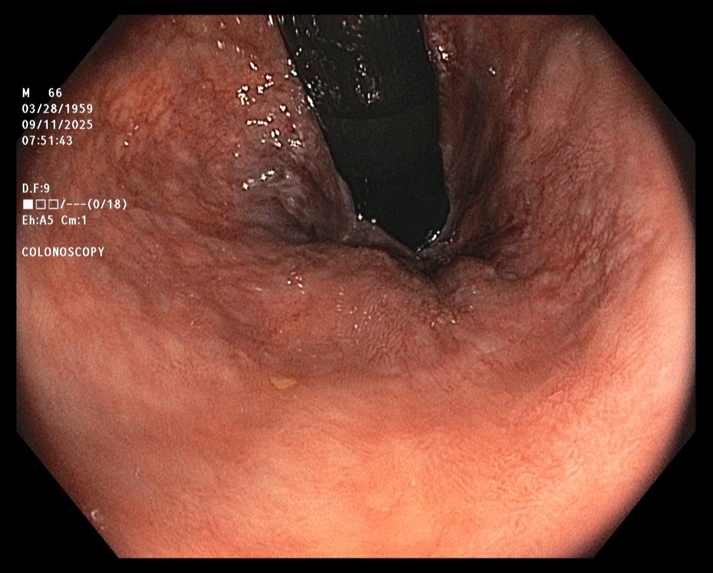
The End